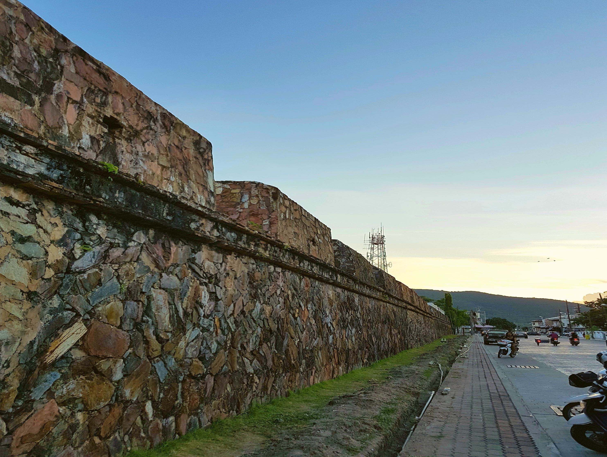
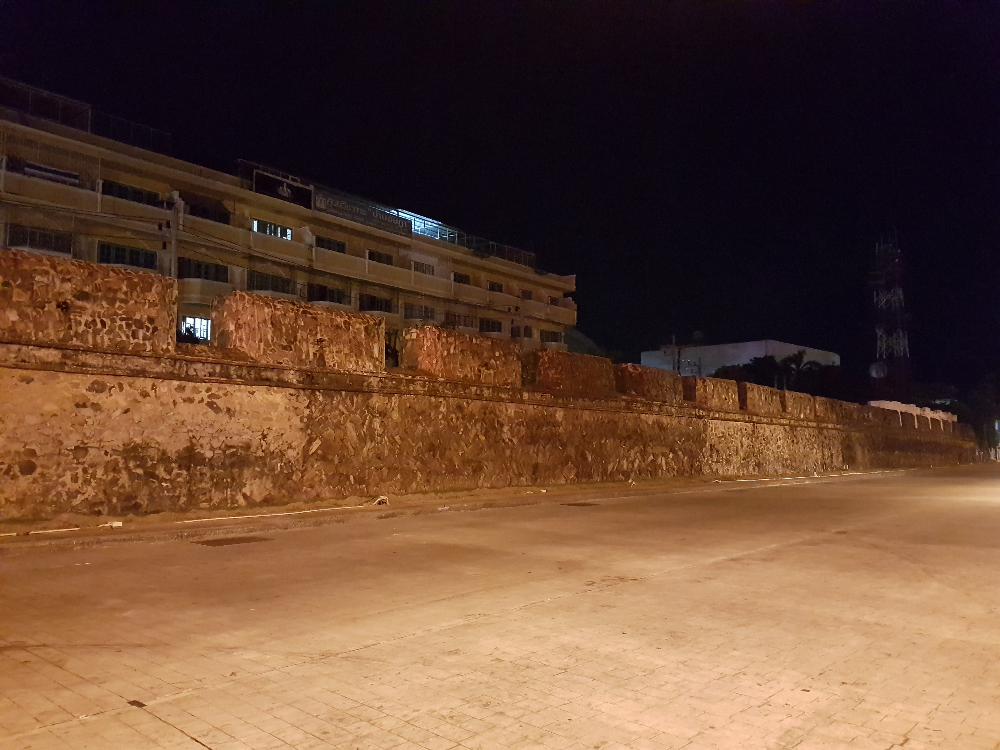
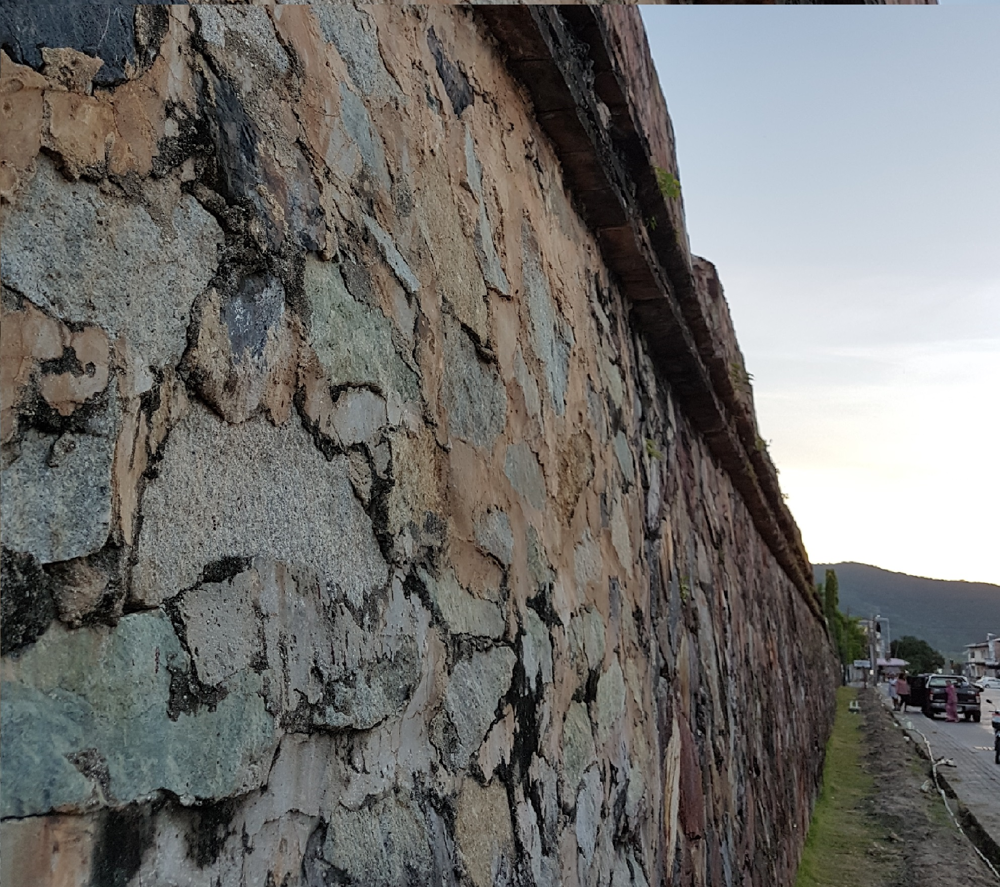
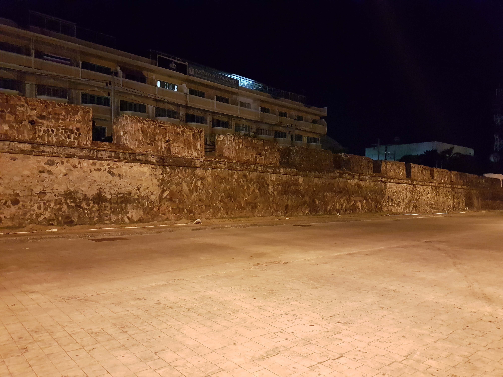

กำแพงเมืองสงขลา
กำแพงเมืองสงขลา
ประวัติความเป็นมา
กำแพงเมืองสงขลาเป็นโบราณสถานที่สำคัญของจังหวัดสงขลา เริ่มสร้างเมื่อ พ.ศ. ๒๓๗๙ ในสมัยพระยาวิเชียรคีรี (เถี้ยนเส้น) ทางกรุงเทพฯ ได้มีท้องตราลงมาให้สร้างกำแพงและป้อม โดยพระราชทานยกเงินภาษีอากรเมืองสงขลาให้ ๒๐๐ ชั่ง แต่การก่อกำแพงยังไม่ทันแล้วเสร็จ หัวเมืองมลายูเป็นกบฏ (พ.ศ. ๒๓๘๑) ยกทัพมาเผาเมืองจะนะ แล้วเลยเข้าตีเมืองสงขลา พระยาวิเชียรคีรี (เถี้ยนเส้ง) รักษาเมืองไว้จนทัพหลวงจากการกรุงเทพฯ ยกลงมาช่วยตีทัพกบฏมลายูแตกกลับไป แล้วช่วยก่อกำแพงเมืองสงขลาจนสำเร็จเมื่อ พ.ศ. ๒๓๘๕
ลักษณะทางสถาปัตยกรรม
กำแพงเมืองสงขลาก่อด้วยศิลาก้อนสอปูนเป็นรูปสี่เหลี่ยม ล้อมรอบเมืองสงขลามีความยาว ทิศเหนือจดใต้ประมาณ ๑,๒๐๐ เมตร ทางทิศเหนือกว้าง ประมาณ ๔๐๐ เมตร ทางทิศใต้กว้างประมาณ ๔๗๐ เมตร กำแพงสูง ๕ เมตร หนา ๒ เมตร มีใบเสมาและป้อมประตูมั่นคง มีป้อม ๘ ป้อม แต่ละป้อมมีปืนใหญ่กระสุน ๔ นิ้ว ป้อมละ ๓ - ๔ กระบอก ประตูเมืองเป็นซุ้มใหญ่ ๑๐ ประตู กับมีประตูเล็กอีก ๑๐ ประตูโดยรอบ บัดนี้คงเหลือแต่กำแพงด้านถนนจะนะ ตรงข้ามพิพิธภัณฑ์สถานแห่งชาติ (เรือนจำเก่า) กับที่ถนนนครในเท่านั้น



